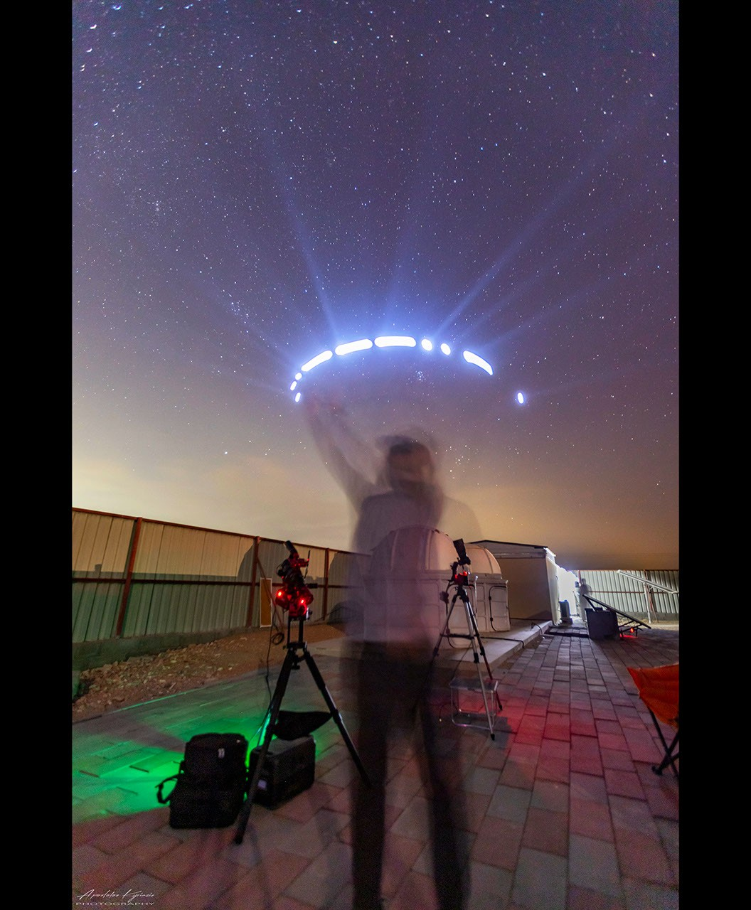

01
São Paulo perde do Fluminense, é vaiado no MorumBis e ouve gritos de 'olé'
CidadeVerde.com · 20/11/2026 · 05:34 (Brasília)Fonte original ↗
 www.uefa.comNations League quarter-finals: Last eight confirmed
www.uefa.comNations League quarter-finals: Last eight confirmed BBC WorldThree Kyiv bridges hit during major Russian missile attack
BBC WorldThree Kyiv bridges hit during major Russian missile attack www.zawya.comLiberia Launches Africa's First Gender-Responsive Foreign Policy: Feminist Foreign PolicyMashableSpaceX Starship landing livestream: Watch the catch attempt liveUOL NotíciasEx-deputado pega 3 anos de prisão por fraude em vistos na AustráliaThe Portugal NewsPortuguese cartoonist wins international award
www.zawya.comLiberia Launches Africa's First Gender-Responsive Foreign Policy: Feminist Foreign PolicyMashableSpaceX Starship landing livestream: Watch the catch attempt liveUOL NotíciasEx-deputado pega 3 anos de prisão por fraude em vistos na AustráliaThe Portugal NewsPortuguese cartoonist wins international award Diplomacia BusinessAprovado acordo Brasil – Índia de Cooperação no Combate ao Terrorismo Internacional e ao Crime Organizado Transnacional
Diplomacia BusinessAprovado acordo Brasil – Índia de Cooperação no Combate ao Terrorismo Internacional e ao Crime Organizado Transnacional noticias.uol.com.brGuerra às drogas custa R$ 14,5 bi fora o custo humanoThe National | Your Number One Daily!Unusual ways to predict cyclones
noticias.uol.com.brGuerra às drogas custa R$ 14,5 bi fora o custo humanoThe National | Your Number One Daily!Unusual ways to predict cyclones 24 NotíciasTrump admite garantias de segurança semelhantes às da NATO para a Ucrânia
24 NotíciasTrump admite garantias de segurança semelhantes às da NATO para a Ucrânia BBC News BrasilA batalha na Justiça para apagar homenagem a expoente do racismo científico no BrasilThe Nation NewspaperChain Reactions Africa wins seven World PR awards
BBC News BrasilA batalha na Justiça para apagar homenagem a expoente do racismo científico no BrasilThe Nation NewspaperChain Reactions Africa wins seven World PR awards
NASA Breaking NewsAPOD: 2026 November 20 – V-G-Rwww.msn.comUS deploys ski-equipped Hercules aircraft to keep Antarctic science missions flyingDiplomacia BusinessEm Roma, Brasil defende o fortalecimento da cooperação internacional para acelerar o combate à fome e à pobreza no mundoBrasil 247Cúpula com Xi e Putin revela fragilidade da diplomacia personalista de Trump조선일보South Korean Women's Handball Team Aims to Reclaim Asian Championship Title UOL NotíciasArábia Saudita intercepta míssil e drones após ataque a torre em RiadNASA Breaking NewsThe Stormy Southwest PacificPacific Media NetworkTonga e PNG intensificam resposta à seca à medida que cresce a ameaça do El Niño
UOL NotíciasArábia Saudita intercepta míssil e drones após ataque a torre em RiadNASA Breaking NewsThe Stormy Southwest PacificPacific Media NetworkTonga e PNG intensificam resposta à seca à medida que cresce a ameaça do El Niño European External Action Service (EEAS)A UE concede 500 milhões de euros em bolsas de investigação, sendo que o Reino Unido acolhe quase metade dos projetos bem-sucedidosSanskriti IASCurrent Affairs for 20 November 2026FragomenWorldwide: Temporary Ebola-Related Entry Restrictions IntroducedUOL NotíciasAstronauta que foi para Lua compara sensação de volta à Terra com salto de arranha-céuNEWS.am TECHInseto desconhecido pela ciência descoberto na Patagônia: pode ser uma nova espécieTribuna do SertãoCientista político compara negociações atuais sobre a Ucrânia à reorganização mundial após a Segunda GuerraPostal do AlgarveCulture Next defende futuro das Capitais Europeias da Cultura. Parlamento Europeu exige reforço de fundos para as cidades | Por João PalmeiroCAJ News AfricaSamia, Nandi-Ndaitwah lead Africa’s health driveR7Empresa de IA desbanca recorde da SpaceXSouthern MailCrestway High pupils selected for Riaan Manser’s Antarctica expeditionEstadão Blue StudioAgência de Comunicação - CGTN | Um marco histórico: o que a cúpula entre Xi Jinping, Vladimir Putin e Donald Trump representa para a estabilidade mundial.dnoticias.ptZelensky vê ataques na Crimeia como ato deliberado contra propriedade ucraniana
European External Action Service (EEAS)A UE concede 500 milhões de euros em bolsas de investigação, sendo que o Reino Unido acolhe quase metade dos projetos bem-sucedidosSanskriti IASCurrent Affairs for 20 November 2026FragomenWorldwide: Temporary Ebola-Related Entry Restrictions IntroducedUOL NotíciasAstronauta que foi para Lua compara sensação de volta à Terra com salto de arranha-céuNEWS.am TECHInseto desconhecido pela ciência descoberto na Patagônia: pode ser uma nova espécieTribuna do SertãoCientista político compara negociações atuais sobre a Ucrânia à reorganização mundial após a Segunda GuerraPostal do AlgarveCulture Next defende futuro das Capitais Europeias da Cultura. Parlamento Europeu exige reforço de fundos para as cidades | Por João PalmeiroCAJ News AfricaSamia, Nandi-Ndaitwah lead Africa’s health driveR7Empresa de IA desbanca recorde da SpaceXSouthern MailCrestway High pupils selected for Riaan Manser’s Antarctica expeditionEstadão Blue StudioAgência de Comunicação - CGTN | Um marco histórico: o que a cúpula entre Xi Jinping, Vladimir Putin e Donald Trump representa para a estabilidade mundial.dnoticias.ptZelensky vê ataques na Crimeia como ato deliberado contra propriedade ucraniana
A guerra às drogas custou R$ 14,5 bilhões aos cofres públicos brasileiros em 2024, sem incluir todos os gastos com operações policiais, e provocou consequências como o encarceramento em massa e a violência nas periferias. Thais Bilenky e José Roberto d
Ação popular pede mudança de nome do Hospital Nina Rodrigues, em São Luís, por reparação histórica, e será julgada na segunda instância em dezembro.
Serviço Europeu para a Ação Externa (SEAE)

Considerado o maior lançamento da história dos games, 'Grand Theft Auto VI' estreou nesta quinta-feira (19/11) e pode trazer preocupação aos pais.
O presidente do Supremo Tribunal Federal (STF), ministro Edson Fachin, decidiu nesta quinta-feira (19) enviar à Procuradoria-Geral da República (PGR) quatro relatórios produzidos pela Polícia Federal (PF) sobre menções a ministros da Corte em conversas encontradas no celular de Daniel Vorcaro. Os relatórios referem-se às citações aos nomes dos ministros Alexandre de Moraes, André Mendonça, Kassio Nunes Marques e Dias Toffoli. Notícias relacionadas: PGR envia ao Supremo parecer favorável a manter prisão de Vorcaro. Andrei entrega a Fachin relatórios sobre ministros no caso Master. Caberá ao procurador-geral, Paulo Gonet, avaliar o material e t
Em mais um dia de turbulência no mercado financeiro, o dólar avançou pela sexta sessão consecutiva e superou R$ 5,93 nesta quinta-feira (19). A alta ocorreu mesmo após o Banco Central vender US$ 1 bilhão para tentar conter a alta. A moeda fechou no maior patamar desde abril de 2025, em meio à pressão do mercado financeiro por cortes no orçamento e indicações da equipe econômica. Na Bolsa, o Ibovespa recuou 0,69%, influenciado em parte pelas bolsas de Nova York, que também fecharam em queda. Notícias relacionadas: Lula promete manter direitos e diz que controle fiscal é prioridade. Dólar sobe para R$ 5,87 com expectativa sobre votação de ajust
Descoberta de supermontanhas de Gondwana até então desconhecidas encontradas sob o gelo antártico Universidade Nacional Australiana
O ministro Alexandre de Moraes, do Supremo Tribunal Federal (STF), marcou para o dia 4 de dezembro o julgamento virtual sobe a validade da lei que altera o cálculo das penas (dosimetria) de condenados pelos atos golpistas de 8 de janeiro de 2023 e que também pode beneficiar o ex-presidente Jair Bolsonaro. O processo sobre a questão foi liberado para julgamento após os presidentes da Câmara dos Deputados, Hugo Motta (Republicanos-PB), e do Senado, Davi Alcolumbre (União-AP), se reunirem com Moraes e defenderem que o ministro libere o processo para inclusão na pauta do Supremo. Notícias relacionadas: Fachin sinaliza que STF pode julgar Lei da D
Instituições financeiras de menor porte, como cooperativas de crédito, terão mais acesso ao mercado aberto, que regula a quantidade de dinheiro em circulação na economia. O Banco Central (BC) aprovou, nesta quinta-feira (19), mudanças na participação desse mercado. A medida também atualiza procedimentos do Sistema Especial de Liquidação e de Custódia (Selic), sistema que define os juros básicos da economia, com foco na automação e na segurança das operações. Notícias relacionadas: Cooperativas de crédito superam R$ 1 trilhão em ativos. As novas regras foram estabelecidas por meio de resolução e passarão a valer para as operações realizadas a

O Ministério das Mulheres lançou nesta quinta-feira (19) a campanha 21 Dias de Ativismo com o tema Conectadas, Seguras, Vivas. O foco este ano é a violência contra mulheres e meninas nos meios digitais. Dados da Central de Atendimento à Mulher - Ligue 180 mostram que as denúncias de violência ocorrida no ambiente virtual cresceram 36,5% entre 2025 e outubro de 2026. Foram 4.575 denúncias em todo o ano passado contra 6.245 até outubro deste ano. Quase metade das vítimas eram mulheres negras (49%), sendo 38,7% pardas e 10,3%, pretas. As mulheres brancas respondem por 36,3% das denúncias. Notícias relacionadas: Violência doméstica atinge 34% das
A sonda Voyager 1 da NASA, a nave espacial que voa mais longe da humanidade, chegou a um dia-luz da Terra, após mais de 49 anos de viagens constantes. Um dia-luz é a distância que a luz percorre em 24 horas, equivalendo a cerca de 16,1 bilhões de milhas (25,9 bilhões de quilômetros). A espaçonave atingiu o marco às 2h16 PST (5h16 EST) de 18 de novembro. Equipe Voyager [...]

Embora os presidentes já tenham se reunido anteriormente para reuniões individuais, esta é a primeira discussão trilateral.


Os aliados europeus da Ucrânia afirmam ter uma posição negocial “unida” numa cimeira em Berlim.